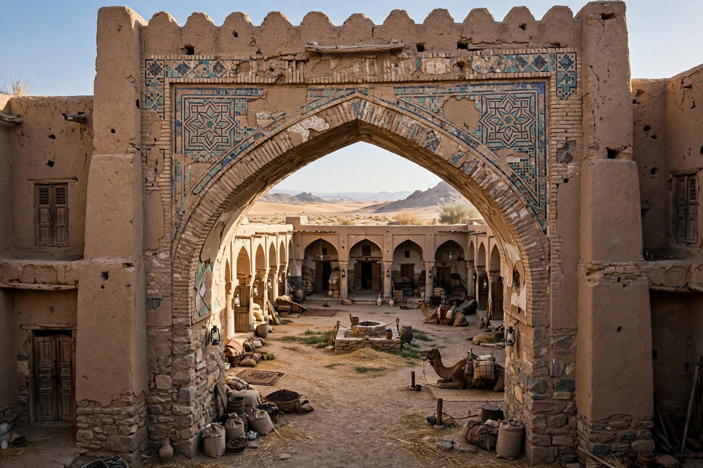

A caravanserai (from Persian kārvānsarāy, "caravan palace") was a roadside inn where travellers (caravaners) could rest and recover from the day's journey. They supported trade across Asia, North Africa and Southeast Europe, notably along the Silk Road and Royal Road of Persia.
Typically a square or rectangular walled enclosure with a single monumental gateway, a caravanserai had an open courtyard surrounded by stables, storerooms and chambers on one or two storeys. Fortified exterior walls protected merchants and their animals and goods from bandits.
Networks of state-sponsored caravanserais flourished under the Achaemenids, Seljuks, Ottomans, Safavids and Mughals, spaced roughly a day's caravan journey — about 30–40 km — apart. Many provided free lodging, fodder and water for a few nights, funded by charitable endowments (waqf).
As maritime trade and later railways displaced caravans, most fell into ruin, though some became museums, hotels or markets. Dozens survive, including the Seljuk Sultan Han in Turkey.